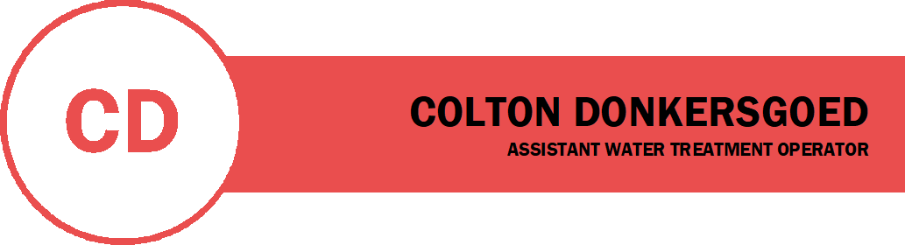

I am a 25 year old graduate from the University of Toronto, with
a Bachelors of Science degree. I studied Computer Science, Mathematics,
and Psychology.
Currently, I am working in the water treatment industry as a
water treatment operator at a Class III plant for the
Six Nations of the Grand River.
WORK EXPERIENCE
| Company | Job Title | Job Description |
|---|---|---|
| Six Nations of the Grand River | Assistant Water Treatment Operator | - Managing and treatment of a Class 3 Water Plant
- Operating and Maintaining all of the treatment processes:
- Advanced problem-solving and troubleshooting skills; key to quickly and competently resolving problems within the plant - Attention to detail; ensuring that all systems within the plant and distribution are running properly where some systems may not have explicit warnings (i.e. pumping stations) |
| Telus International | Mapping Analyst | - Cleaning data generated from AI with regards to mapping software
- Comparing results from user-generated queries to guidelines to ensure that AI was successfully parsing the user input |
| Ontario Filter | Machine Operator | - Maintainenance and Operation of steel cutting machine
- Usage of forklift to move piping materials (20ft bundles) - Stock tracking |
EDUCATION
| SCHOOL | EDUCATION | SPECIFIC INFORMATION |
|---|---|---|
| UNIVERSITY OF TORONTO | BACHELORS OF SCIENCE :: 2021 | - studied Computer Science
- Object-Oriented programmming with Java - studied Psychology - Abnormal Psychology - studied Mathematics - Topography |
| HARVARD - IN PROGRESS | CERTIFICATION IN INTRO TO COMPUTER SCIENCE | - Coursework in basic computer science application and theory |
| CERTIFICATION IN MACHINE LEARNING AND AI | - Training with Python in regards to machine learning, artificial intelligence
- Specifically attacks concepts and algorithms at the foundation of modern AI |
|
| WALKERTON CLEAN WATER CENTRE | WATER TREATMENT LICENSING | CLASS I LICENSING
OPERATOR IN TRAINING LICENSING
|
PROJECTS
| TITLE | DESCRIPTION | LINK |
|---|---|---|
| STONEHEARTH EXPANDED | An all-purpose modification of one of my beloved games, Stonehearth. The mod is currently outdated, but consists of an updated projectile system by modifying the base game's LUA code, many new objects added to the game thanks to it's unique moddability, and more. | Stonehearth Expanded |
| WEBSITE | A basic website containing information about myself, my career, my education, and my resume. | My Website |
| WATERBILLING FIX | A simple python program editing data exported as a CSV file, and converting it into a different format so that it is properly read into the program. | Waterbilling Public |
| WATERPLANT GUI | A python program that is designed to contain and manipulate important information with regards to water treatment plant operations." | Waterplant GUI |
| LEETCODE PROBLEM SOLVING | A github repo containing my solutions to LeetCode problems, solving ~1 per day. | Leetcode Problems |